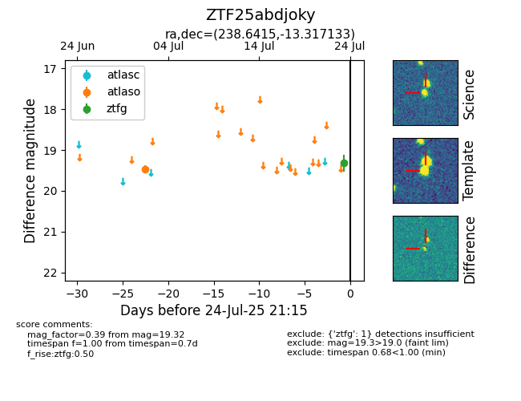

Target ZTF25abdjoky at 2025-07-24 21:15, see:
FINK: fink-portal.org/ZTF25abdjoky
Lasair: lasair-ztf.lsst.ac.uk/objects/ZTF25abdjoky
ALeRCE: alerce.online/object/ZTF25abdjoky
alt names
ZTF25abdjoky (ztf,fink)
coordinates:
equatorial (ra, dec) = (238.6415,-13.31713)
galactic (l, b) = (356.5178,+29.93041)
photometry
last atlaso=19.47, ztfg=19.32
1 atlaso, 1 ztfg detections
